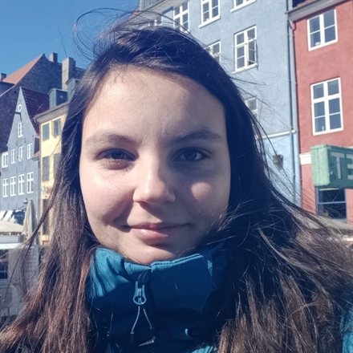

Silvia Casola
Marie Skłodowska-Curie Postdoctoral Fellow
TALN group · Universitat Pompeu Fabra, Barcelona
About
I am a Marie Skłodowska-Curie Postdoctoral Fellow at Universitat Pompeu Fabra, hosted by Prof. Horacio Saggion (TALN). My project, GenEval, studies how generation and evaluation interact in LLM judges, to predict their reliability and build better metrics.
Previously, I was a postdoc at LMU Munich & MCML with Prof. Barbara Plank (NLG and evaluation) and at the University of Turin with Dr. Valerio Basile (perspectivism and human label variation). I hold a Ph.D. cum laude from the University of Padua and FBK, and interned at Spotify and Huawei.
News
Publications
* Equal contribution. See also my Google Scholar and ORCID profiles.
Teaching
- Summarization LMU Munich, MSc Computational Linguistics · Summer 2025, 2026 · own course
- Simplification LMU Munich, MSc Computational Linguistics · Winter 2026 · own course
- Summarization and Simplification LMU Munich, MSc Computational Linguistics · Winter 2025 · own course
- NLG Evaluation LMU Munich, MSc Computational Linguistics · Summer 2025, 2026
- Information Retrieval LMU Munich, BSc/MSc Computational Linguistics & Computer Science · Summer 2026
- Trustworthy Data-centric AI LMU Munich, MSc Computational Linguistics · Winter 2025, 2026
- Vertiefung der Grundlagen der Computerlinguistik LMU Munich, MSc Computational Linguistics · Winter 2025, 2026
- NLP lectures, HumanAIze Second-level Master, Politecnico di Torino & University of Turin · 2025, 2026
I have also supervised four Master’s and two Bachelor’s theses at LMU Munich.
Service
- Area Chair ACL Rolling Review (2025, 2026) · GEM Workshop (2026)
- Shared task organiser LeWiDi 2025 – Learning With Disagreements, NLPerspectives @ EMNLP 2025
- Reviewer Computational Linguistics · Natural Language Engineering · Information Processing & Management · ACL Rolling Review · INLG · CLiC-it · ECAI · GEM · NLPerspectives
- Mentor ACL Student Research Workshop (2024)
- Selection committee relAI – Konrad Zuse School of Excellence in Reliable AI, MSc scholarships (TUM & LMU)